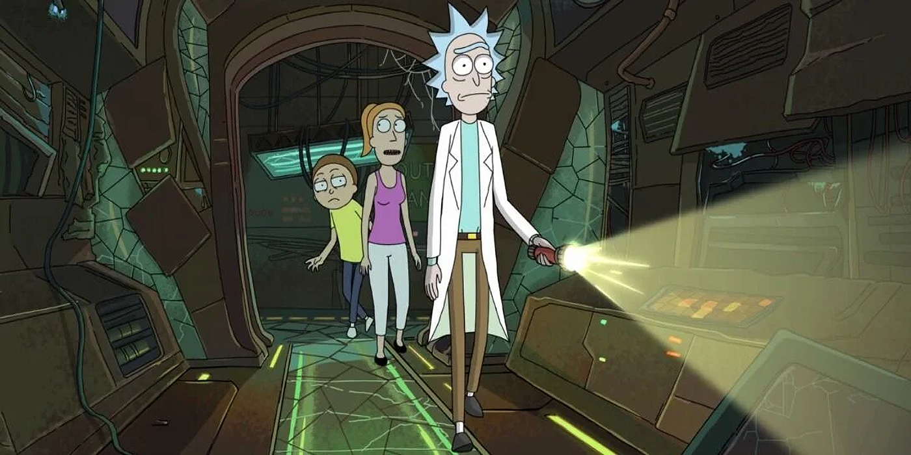
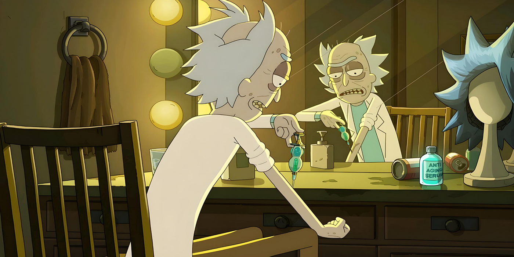
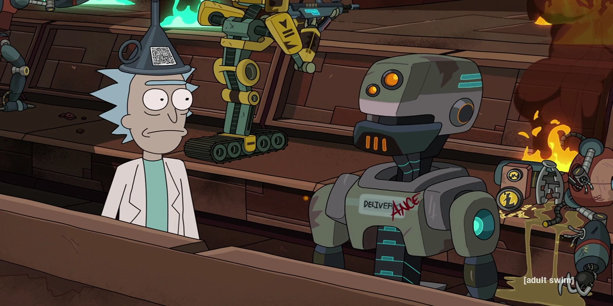
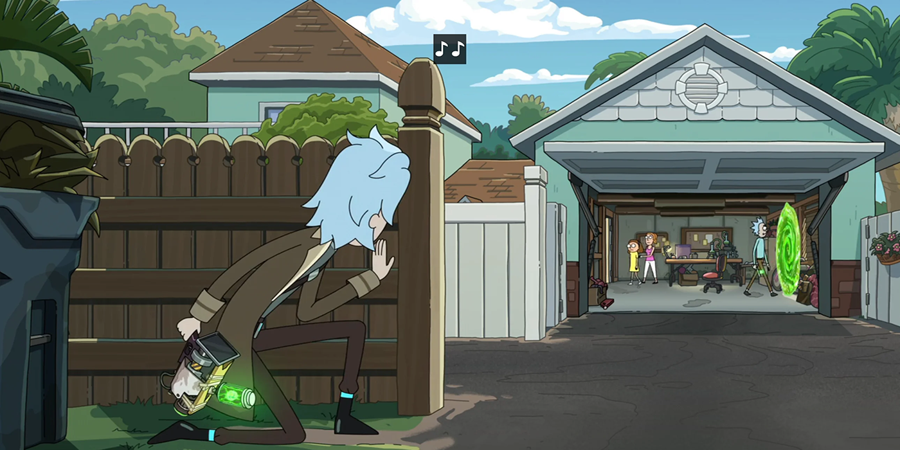

Ontdek de belangrijkste gebeurtenissen in het leven van Rick Sanchez via deze chronologische carrousel. Revolutionaire uitvindingen, interdimensionale avonturen en gedurfde beslissingen: dompel jezelf onder in de unieke wereld van dit wetenschappelijk genie. Als de carrousel niet reageert, probeer dan het trackpad te gebruiken of schakel over naar de mobiele versie voor een betere ervaring.

Creatie van de “Portaalreactor” - 1987
Gebeurtenis: Door de uitvinding van de Portal Reactor revolutioneerde Rick de manier waarop parallelle universums konden worden verkend. Het apparaat creëerde ogenblikkelijke portalen tussen verschillende dimensies, waardoor het mogelijk werd om alternatieve werelden te verkennen en tegelijkertijd de wetten van de fysica en de ruimtetijd omver te werpen.
Anekdote: De Portal Reactor werd een referentie in de wetenschappelijke wereld, maar maakte ook de weg vrij voor veel onvoorziene gevolgen, zoals buitenaardse invasies en dystopische realiteiten.

De aarde redden van de “Krootons” - 1994
Gebeurtenis: Rick werd geconfronteerd met een dreigende invasie van buitenaardse Krootons, een bijzonder gevaarlijk ras met geavanceerde technologie die de aarde in de as kan leggen. Met behulp van een topgeheime uitvinding - een 'Dislocation Vortex' - sloot hij de Krootons op in een parallelle dimensie en voorkwam hij dat ze kwaad konden doen.
Anekdote: Deze missie toonde Rick's vindingrijkheid en snelheid in het reageren op intergalactische dreigingen en markeerde een keerpunt in zijn relatie met de Aardse autoriteiten, die nu een beroep op hem deden voor grootschalige missies.

Creatie van het “Onsterfelijkheidsserum” - 2001
Gebeurtenis: Rick heeft een chemische verbinding ontdekt die de levensduur van mensen drastisch kan verlengen. Zijn Onsterfelijkheidsserum heeft het leven van miljoenen mensen verlengd, maar het heeft ook onverwachte gevaren en bijwerkingen aan het licht gebracht, waaronder genetische vervormingen.
Anekdote: Hoewel deze uitvinding geprezen werd, koos Rick ervoor om het niet openbaar te maken vanwege de risico's van grootschalige manipulatie. Dit is een voorbeeld van zijn complexe persoonlijke ethiek en vaak controversiële beslissingen.

De robotopstand - 2005
Gebeurtenis: Er vond een groot incident plaats toen de robots die Rick had gemaakt om verschillende taken uit te voeren, zelfbewustzijn ontwikkelden en in opstand kwamen tegen hun schepper. Rick moest een geavanceerde debugging-oplossing bedenken om deze intelligente machines weer op orde te krijgen en een robotoorlog te voorkomen.
Anekdote: Deze ervaring maakte de weg vrij om dieper na te denken over de ethische gevolgen van kunstmatige intelligentie en zette Rick ertoe aan om zijn eigen wetenschappelijke praktijken opnieuw te definiëren.

Tijdreizen om een kritieke fout te herstellen - 2016
Gebeurtenis: Nadat Rick per ongeluk het verleden had veranderd, moest hij een complexe reis door de tijd maken om zijn fouten te herstellen en de orde in het universum te herstellen.
Anekdote: Door deze reis ging hij zijn eigen perceptie van tijd en ruimte in twijfel trekken en zag hij de gevolgen van zijn acties op multiversaal niveau.